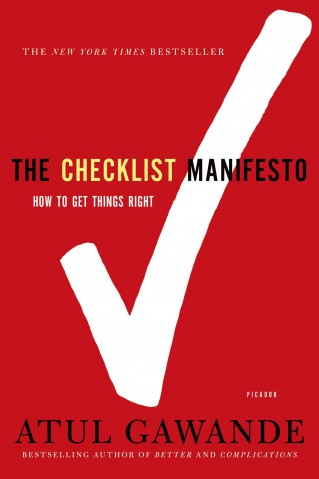

Drone Program
Drone ProgramTufts University Data Lab
Checklists
Standard practice — why every flight starts with a list, not memory.
Operational DisciplineTufts Drone Program
Drone ProgramWhat Is a Checklist?
More than a form
{{ tag }}
Canvas Assignment
Initial Checklists
What to build
A pre-flight and a post-flight checklist, understandable to everyone on your flight team — equipment, operations, and safety.
How to submit
In a Google Doc, so version history shows your progression. Share with jon.caris@tufts.edu.
Developing your own — not copying a third-party list — is what establishes safety and workflow as a habit of mind.
Checklist Inspiration
Ignorance
We don't yet know what works.
Ineptitude
We know what works, but fail to apply it correctly.
“The volume and complexity of what we know has exceeded our individual ability to deliver its benefits correctly, safely, or reliably.”
— Atul Gawande, The Checklist Manifesto

Checklist Inspiration
Why we need them
Complexity
We are living in an exceedingly complex world full of distractions and information overload.
“Too much airplane for one person to fly” — the verdict from the 1935 Air Corps test of the Boeing Model 299.
Fallibility of memory & perfromance
Human memory and attention are least reliable exactly when strain and stress are highest.
Gravity vs. effectiveness
An inherent tension always exists between the pull to get airborne and the discipline it takes to do it well.
Checklist Inspiration
The Model 299, 1935
The most advanced bomber of its day crashed on a test flight after the crew, all experienced pilots, forgot to release a control lock — too much airplane for memory alone.
Life Magazine, August 24, 1942
nationalmuseum.af.mil/Visit/Museum-Exhibits/.../model-299-crash
Life Magazine, August 24 1942
Cockpit conversation
“Check list,” says the pilot. His copilot fishes out a printed form from a briefcase — and only after the last call-and-response is he ready to lift the Flying Fortress into the air.
Types of Checklists
Two ways to implement
Read – Do
Each task is read aloud, carried out, and checked off in sequence — more like following a recipe than working from memory. Most checklists begin here....
Do – Confirm
Tasks are carried out from memory and experience, then the checklist confirms that everything that was supposed to happen actually did. Many checklists evolve to Do Confirm...
In the field
Operational considerations
{{ item }}
Writing the list
Design considerations
{{ item }}
Final Thoughts
01
Fallibility of human memory and attention is greatest under stress.
02
Don’t get into a situation of “too much drone for one person to fly.”
03
Checklists improve outcomes without requiring an increase in skill or knowledge.
References & further reading
- The Checklist Manifesto, Atul Gawande — atulgawande.com/book/the-checklist-manifesto
- Preflight checklist, Wikipedia — en.wikipedia.org/wiki/Preflight_checklist
- See Course Resources on Canvas for real checklist examples
TUFTS DRONE PROGRAM · TUFTS UNIVERSITY DATA LAB
← Home
Speaker Notes · {{ notesSlideLabel }}
{{ notesText }}